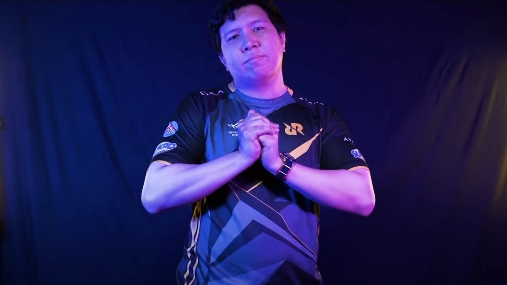
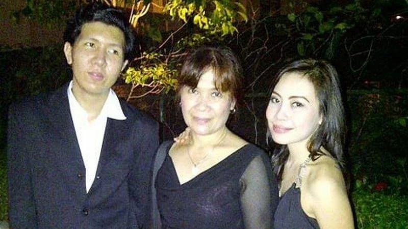
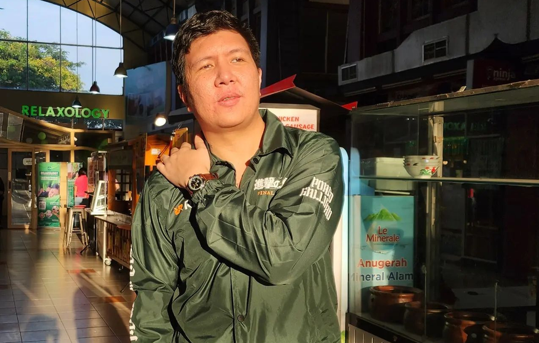

Pengenalan

Brando Franco Windah (lahir 14 Maret 1992), secara profesional dikenal sebagai Windah Basudara atau hanya sebagai Brando, merupakan seorang konten kreator Indonesia. Ia terkenal karena siaran langsung pada permainan video di YouTube. Kemudian ia juga dikenal banyak menciptakan istilah, salah satunya adalah "Bocil Kematian", istilah yang ia gunakan untuk menggambarkan penggemarnya.
Kehidupan
Masa Muda

Brando Franco Windah lahir pada 14 Maret 1992 di Manado, Sulawesi Utara, merupakan anak kedua dari 4 bersaudara. Dia memiliki dua saudari, Florence Windah dan Caroline Windah, dan seorang adik laki-laki, Vincent Windah. Ketika dia masih di taman kanak-kanak, keluarganya memutuskan untuk pindah dan menetap di Jakarta di mana dia menghabiskan tahun-tahun pembentukannya. Ia bersekolah di SD Santo Vincentius, SMP Marsudirini dan SMA Santo Bellarminus.
Ketika Brando duduk di tingkat sebelas, dia sering diganggu oleh teman-teman sekelasnya, akhirnya membuatnya berhenti sekolah dan bekerja untuk ayahnya sebagai operator warnet. Orang tuanya meyakinkannya untuk melanjutkan pendidikan hingga lulus dengan ijazah, sehingga ia kemudian melamar program sekolah rumah yang dijalankan oleh Kak Seto, seorang Psikolog Indonesia.
Setelah lulus SMA, Brando melanjutkan ke perguruan tinggi di mana ia belajar Hubungan Internasional untuk mendapatkan gelar Sarjana (Strata-1 dalam standar akademik Indonesia) di The London School of Public Relations (LSPR), tetapi ia harus putus sekolah karena kendala ekonomi.
Kehidupan Pribadi

Ketika Brando berada di tahun pertamanya di sekolah menengah, ia mengalami penindasan oleh teman-teman sekolahnya, ini mungkin karena perawakannya yang tinggi dan kurus. Dia tidak memberi tahu orang tuanya karena dia merasa malu untuk mengakui bahwa orang lain melihatnya seperti ini. Perundungan berlanjut ke sekolah menengah itulah sebabnya dia memutuskan untuk berhenti di tingkat dua
Karier
Windah Basudara memulai karier YouTube-nya pada 29 Desember 2018. Dia mengulas banyak genre permainan di saluran YouTube-nya. Mulai dari Permainan Bermain Peran (RPG), Aksi, Strategi Waktu Nyata (RTS), Permainan Balap, Permainan Petualangan, dan masih banyak lagi. Dia juga dikenal karena akting yang biasanya dia lakukan selama atau di akhir siaran langsungnya, sebagai bagian dari kepribadiannya yang unik. Ia mengatakan, pertunjukan tersebut merupakan salah satu bentuk gimmick untuk menghibur dan diharapkan dapat menarik lebih banyak penonton. Dia juga mengatakan bahwa dia menghabiskan jutaan untuk pakaian dan barang lain-lain.
Karena keberhasilan yang luar biasa sebagai seorang penyiar, ia sekarang mengumpulkan sekitar 100 ribu penonton selama siaran langsung-nya. Pada April 2019, Windah Basudara hanya memiliki seribu pelanggan, pada Juni 2019, pelanggannya meningkat menjadi 100.000. Ia pernah berkolaborasi dengan MiawAug dalam permainan Secret Neighbor dan juga pernah diundang untuk tampil di atas panggung pada acara YouTube FanFest 2019. Pada Juni 2020 ia telah mencapai satu juta pelanggan.
Selain keberhasilan YouTube-nya, Brando juga berkontribusi pada acara penggalangan dana. Salah satu yang paling berkesan adalah live streaming 24 jam, di mana ia berhasil mengumpulkan dana sebesar Rp.50 juta yang ia sumbangkan untuk membantu penanganan COVID-19.
Penghargaan
| Tanggal |
Menghadiahkan |
Kategori |
Dihadiahi Oleh |
Hasil |
| 18 November 2021 |
Indonesian Esports Awards 2021 |
Pembuat Konten Game Terfavorit |
GTV |
Menang |
| 23 Desember 2021 |
Dunia Games Awards 2021 |
Pembuat Konten Game Tahun Ini |
Telkomsel dan Dunia Games |
Menang |
| 29 November 2022 |
Indonesian Esports Awards 2022 |
Pembuat Konten Game Terfavorit |
GTV |
Menang |